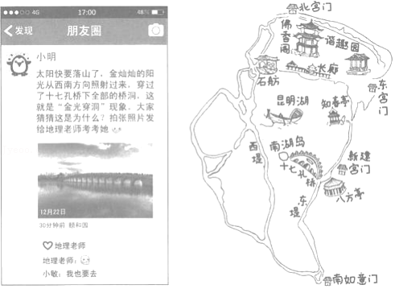
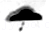

2019年北京市中考地理真题 · 选择题 第1、2、3、4、5题
1．（1分）在整理地理学习笔记时，我们可以借助实物地球仪（ ）
A．演示地球的自转和公转
B．看到人类认识地球形状的过程
C．精确测量出山地的海拔
D．直接读出地球的半径和表面积
如图为小明同学观赏“金光穿洞”后发的朋友圈截图和他手绘的颐和园游览图。读图，完成第2﹣6题。

2．观赏“金光穿洞”现象的最佳天气为（ ）
A．

B．C．D．3．拍摄此照片可能在（ ）
A．谐趣园B．十七孔桥上C．中午D．傍晚
4．每年这个时段都有“金光穿洞”现象，与其形成有关的是（ ）
①地球自转 ②地球公转 ③天气 ④气候
A．①②③B．①②④C．①③④D．②③④
5．颐和园是世界文化遗产，这与首都城市职能中相契合的一项是（ ）
A．政治中心B．文化中心
C．科技创新中心D．国际交往中心